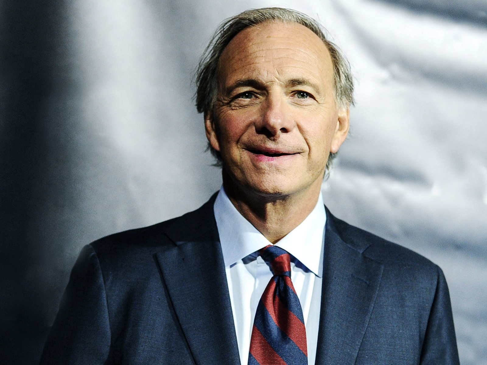

Ray Dalio
American billionaire investor

American billionaire investor, hedge fund manager, and philanthropist.
Here is a time line of Ray Dalio:
- 1949 - Born in New York City, U.S.A
- 1961 - Dalio began investing at age 12 when he cought shares of Northeast Airlines for $300 and tripled his investment
- 1974 - Becomes a futures trader and broker at Chearson Hayden Stone
- 1975 - Founded investment management frim, Birdgewater Associates out of his apartment
- 1981 - The fim opened an office in Westport, Connecitcut
- 2007 - Becomes largest hedge fund
- 2007 - Bridgewater suggested there might be a global finacial crisis